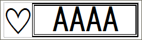
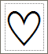
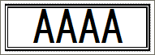

This is explained using the next label as an example.

|
Create the two label templates below.
A 23 mm template that is the label's left side (SMALL.LBX)

|

|
This is a VBScript example that creates a label by chaining these two together.
ObjDoc.Open("MAIN.LBX") ObjDoc.StartPrint "b-PAC printing test", &h0400 'ChainPrint ObjDoc.PrintOut 1, 0 ObjDoc.Open("SMALL.LBX") ObjDoc.PrintOut 1, &h0C00 'TailCut+ChainPrint ObjDoc.EndPrint
<<Explanation>>
"Chain-print" MAIN.LBX(1) and SMALL.LBX(1), and cut between MAIN.LBX(1) and
SMALL.LBX(1).
After cutting, the label portion printed with SMALL.LBX(1) remains at the
printer unit.
This portion usually corresponds to the front margin of the next print job.
In the next printing, MAIN.LBX(2) and SMALL.LBX(2) are "chain-printed" in
continuation of SMALL.LBX(1), and the cut is made between MAIN.LBX(2) and
SMALL.LBX(2).
This repeats hereafter.
As a result, MAIN.LBX(1) with the front margin is printed on the first piece only, and the label below is output from the second piece onwards.